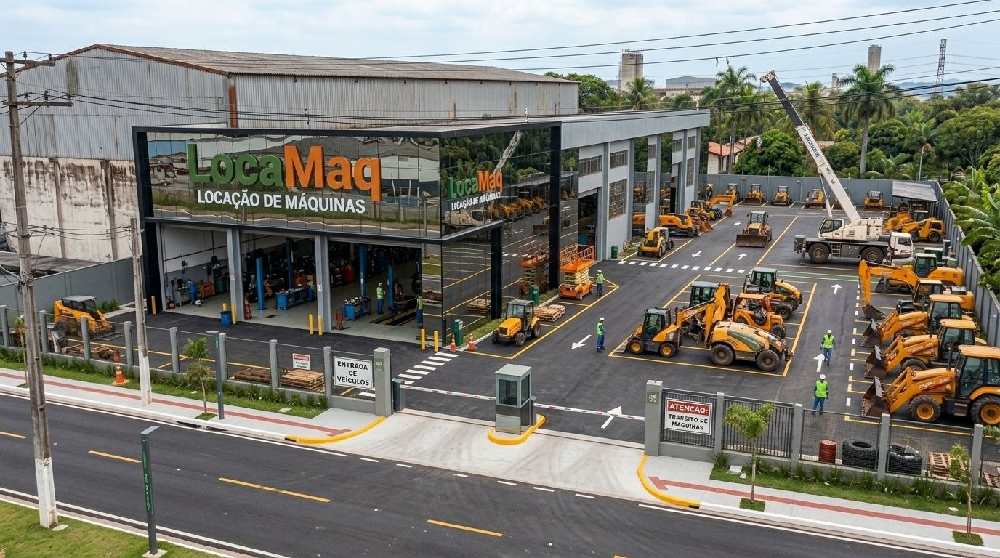

A máquina certa, na hora certa.
Locação de máquinas pesadas desde 1992, com 117 equipamentos em cinco unidades paulistas.
- Manutenção incluída
- Revisão a cada 250 horas
- Diária, semanal ou mensal
Unidade atual da LocaMaq. Imagem e animação ilustrativas, geradas por IA.
- Escavadeiras
- Retroescavadeiras
- Pás-carregadeiras
- Guindastes
- Empilhadeiras
- Plataformas elevatórias
- Geradores
A LocaMaq em números
- 1992 o ano em que o seu José abriu o barracão, em Sorocaba Nossa história
- 117 equipamentos ativos na frota Ver a frota
- 7 tipos de máquina, da empilhadeira ao guindaste O que está incluído
- 5 unidades no interior paulista e na Grande São Paulo Ver unidades
Números do case fictício, tirados do cadastro de equipamentos do projeto.
A obra não pode esperar.
Conte o que você precisa e um vendedor responde com a proposta.
- Telefone (15) 0000-0000
- WhatsApp WhatsApp
- E-mail contato@locamaq.example
- Horário Segunda a sexta, das 7h às 18h. Sábado, das 7h às 12h.
Pedido em menos de um minuto
Escolha a máquina, veja as horas e o diesel estimados para a sua obra e mande o pedido.